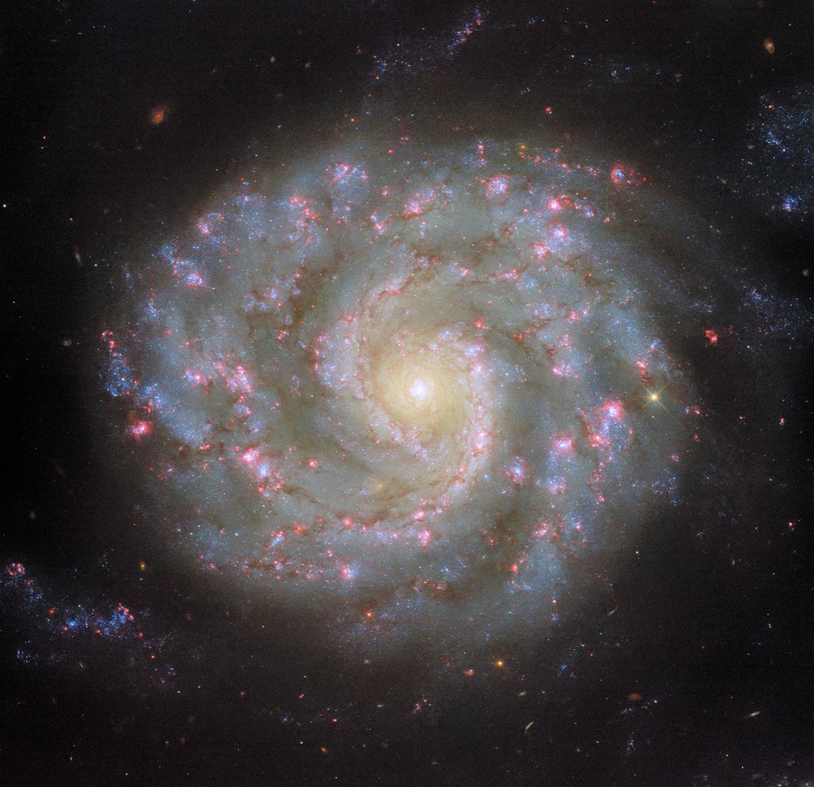
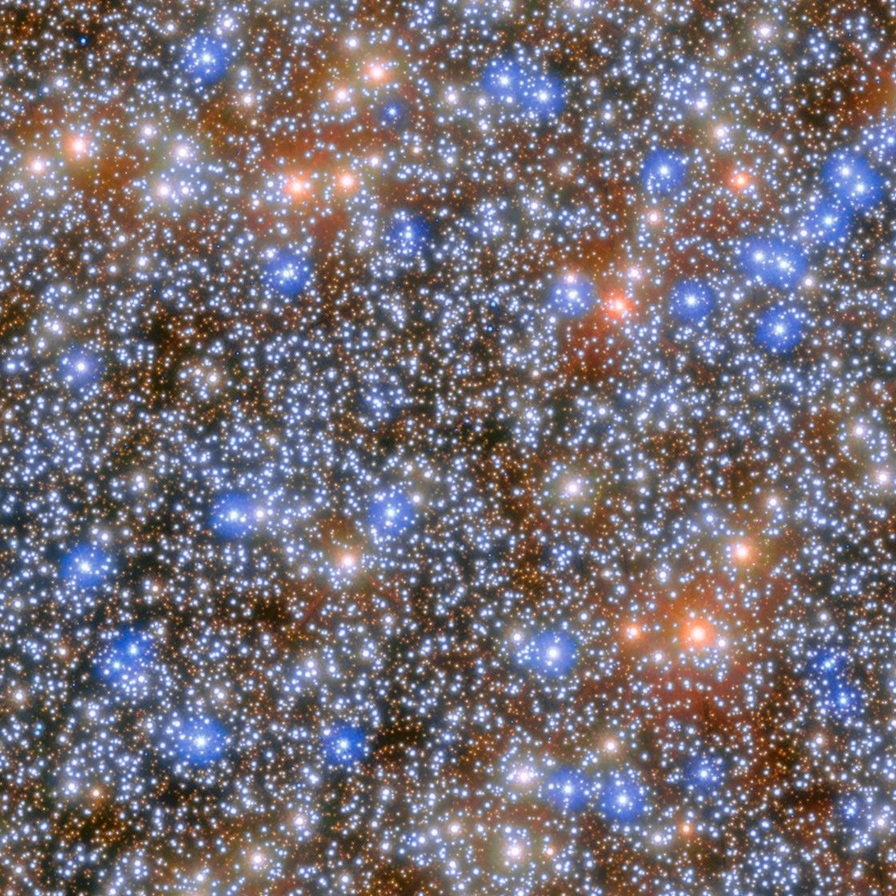
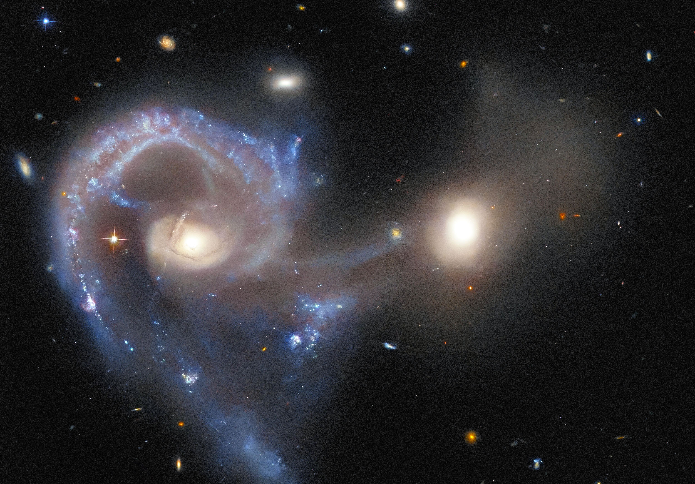
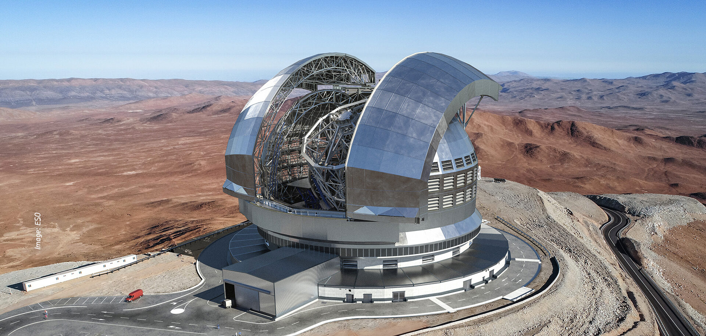
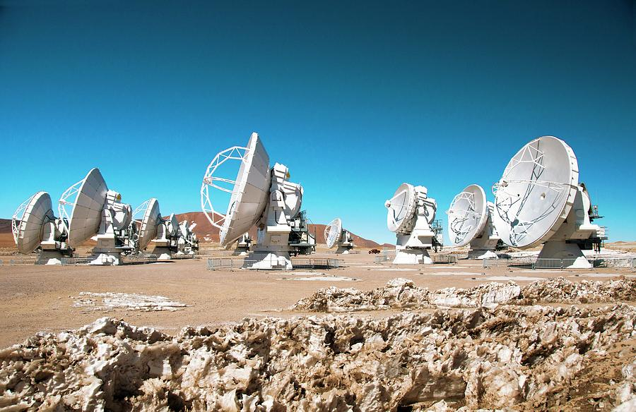
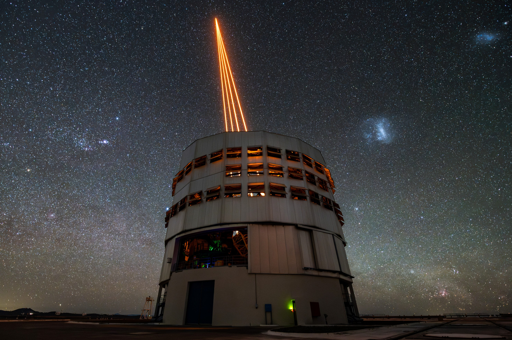
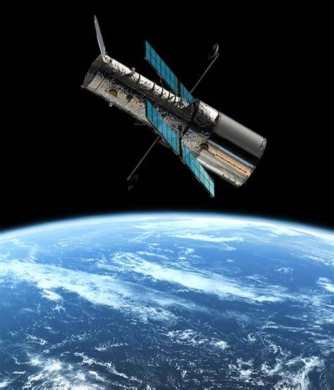
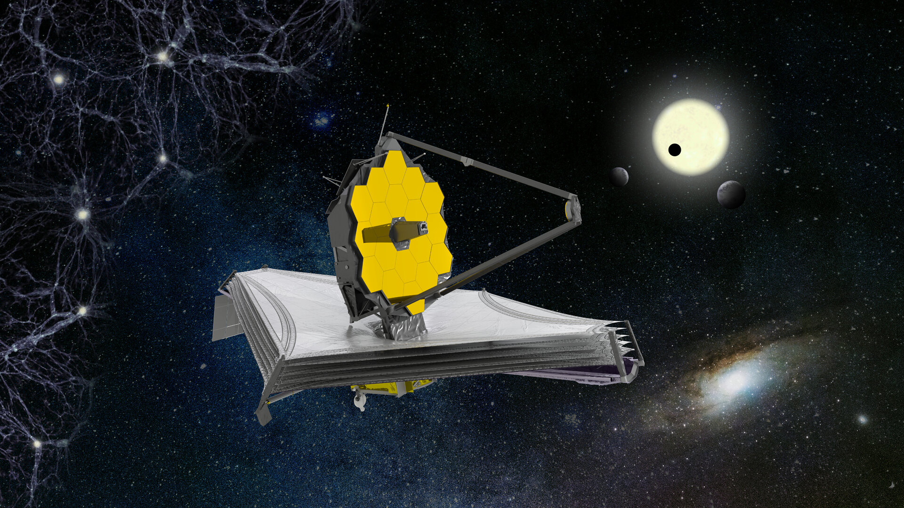

Black Holes & Their Host Galaxies
I measure the masses of central black holes dynamically, from the motions of stars and cold gas deep inside galactic nuclei, and I span the full mass range from intermediate-mass black holes in dwarf galaxies and star clusters to the ultramassive black holes of giant ellipticals. Measured this way, nearby galaxies become fossil records of how black holes were seeded and how they grew with their hosts. My work is organised in four connected themes: how the masses are measured, how the smallest massive black holes formed, how the largest grew with their galaxies, and how the next generation of telescopes will extend all three.
Four Connected Themes
Each theme has its own page with the scientific background, my published results, and the papers behind them. Select a theme to read more.

Massive Black Holes Across the Mass Spectrum
How do we weigh a black hole we cannot see? I measure black hole masses from the motions of stars (JWST/NIRSpec) and of cold molecular gas (ALMA) around them, and I test each method against independent benchmarks. My measurements so far span about 107 to a few 109 M☉.
HighlightsA stellar-dynamical mass for NGC 4258 within 5% of its water-maser benchmark; first robust masses for NGC 4736, M81 and NGC 4061; a revised mass model for NGC 7052 (lead author); M87 with JWST (lead author, in preparation).

Formation and Evolution of Intermediate-Mass Black Holes
Intermediate-mass black holes (about 102–105 M☉) are the missing link between stellar remnants and supermassive black holes, and the best surviving record of how black holes were first seeded. I study where they form and how they grow in three settings: nuclear star clusters, dwarf galaxies, and the young Universe, where JWST's “Little Red Dots” point to fast early growth.
HighlightsShowed that ELT/HARMONI can weigh IMBHs down to about 0.5% of a nuclear star cluster's mass within 10 Mpc, and IMBHs above about 105 M☉ out to the Fornax and Virgo clusters (20 Mpc), about 200 times the volume in which IMBHs in nuclear star clusters have been confirmed so far.

Co-evolution of Supermassive Black Holes and Their Hosts
Black hole masses track the properties of their host galaxies, which suggests that the two grew together. I focus on the most massive systems, giant ellipticals built by mergers and regulated by radio jets, where the scaling relations may bend or break and the growth mechanisms differ from those in ordinary galaxies.
HighlightsBillion-solar-mass black holes in the radio galaxies NGC 7052 and NGC 4061 with ALMA; a JWST re-measurement of M87 (in preparation); and ELT simulations that extend dynamical masses to redshift 1–2, when massive galaxies were assembling.

Computational Astrophysics, Simulations, and Modelling
The 39-m Extremely Large Telescope will be the largest optical telescope ever built. Before it starts observing, I create realistic virtual observations with its HARMONI spectrograph and MICADO camera, then analyse them exactly like real data to find out which black holes it will be able to weigh.
HighlightsEnd-to-end HSIM and SimCADO simulations of IMBHs in dwarf galaxies out to the Virgo and Fornax clusters, and of giant black holes at redshift 1–2, recovered to about 10%. The same modelling tools (JAM, KinMS, MCMC) power my measurements from real JWST and ALMA data.
One Measurement Chain, Many Tracers
All four themes rest on the same measurement chain. I start from spatially resolved observations of a galactic nucleus, extract the motions of stars or cold gas, and fit dynamical models in which the black hole mass is one free parameter alongside the stellar mass-to-light ratio and the disk inclination.
Using several tracers on the same galaxies (stellar kinematics from JWST/NIRSpec and ground-based IFS, cold molecular and atomic gas from ALMA) lets me cross-calibrate methods and expose systematic differences that single-method samples cannot reveal.
What Drives the Programme
Four unresolved problems, one per theme, that my measurements and simulations are designed to address.
Facilities & Observing Time
Ground- and space-based facilities from millimetre to optical wavelengths provide the coverage needed to model both the stellar and the gaseous tracers of black hole mass.




Accepted Observing Proposals
Competitively awarded programmes that support the black hole mass measurement campaign.